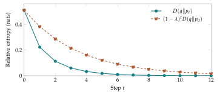

Two weather models can assign different chances of rain while having the same entropy. A binary table \((3/4,1/4)\) and its reversal \((1/4,3/4)\) have identical uncertainty, but they favor opposite outcomes. Entropy describes a distribution on its own. Comparing a changing model with a particular target requires another function.
Relative entropy supplies a directed comparison. We will derive its formula from the extra surprise incurred by using one table to describe observations from another. Then we will use its one-step difference to prove that a mixing update approaches its target. This joins information theory to the stability questions from Chapter 2.
Comparing a source distribution with a model
Suppose observations follow \(p\), while a proposed model assigns probabilities \(q\). The model reports surprisal \(-\ln q_i\) when label \(i\) occurs. Averaging under the actual source gives the cross-entropy \[H(p,q)=-\sum_i p_i\ln q_i.\] The first argument determines how often outcomes are observed. The second determines the probabilities used to describe them.
Subtract the source’s own entropy: \[\begin{aligned} H(p,q)-H(p) &=-\sum_i p_i\ln q_i+\sum_i p_i\ln p_i\\ &=\sum_i p_i\ln\frac{p_i}{q_i}. \end{aligned}\] This is the Kullback–Leibler divergence, also called relative entropy: \[\boxed{D(p\|q)=\sum_i p_i\ln\frac{p_i}{q_i}.}\] The double bar separates the two arguments; it is not a conditional probability symbol. The logarithms are natural, giving units of nats.
The same formula can compare a current state with a reference even when neither is claimed to be the true source. What matters is that the roles of the arguments are explicit.
Example. The cost of using a fair model
Let \(p=(3/4,1/4)\) and \(q=(1/2,1/2)\). The fair model assigns surprisal \(\ln2\) to either observation, so its cross-entropy is \(\ln2\). The source entropy is about \(0.562335\). Their difference is \[D(p\|q)=\frac34\ln\frac32+\frac14\ln\frac12 \approx0.130812.\] One summand is negative, but the total is positive. Individual outcomes can favor different models; the average is the relevant comparison.
Direction and support belong to the definition
Reversing the arguments changes both the averaging weights and the ratios. For the same two tables, \[D(q\|p)=\frac12\ln\frac23+\frac12\ln2 =\frac12\ln\frac43\approx0.143841.\] The two directed values differ. Relative entropy is not a symmetric distance.
If \(p_i=0\), its term contributes zero. If \(p_i>0\) but \(q_i=0\), the divergence is infinite: the reference model assigns zero probability to an outcome that the first table allows.
For example, \[D((1,0)\|(1/4,3/4))=\ln4,\] whereas \(D((1/4,3/4)\|(1,0))\) is infinite. This asymmetry at the boundary will motivate a different, symmetric geometry in Chapter 7.
In data analysis, a zero observed count need not mean a zero underlying probability. One way to avoid assigning impossible probabilities from limited data is to add a positive amount \(\alpha\) to every category count: \[\widetilde p_i=\frac{n_i+\alpha}{N+k\alpha}.\] The entries add to one and are positive. This is a deliberate smoothing rule. It changes the estimator and should be stated, rather than silently replacing zeros inside a calculation.
Why the total divergence cannot be negative
For positive tables, apply weighted arithmetic-geometric mean to \(q_i/p_i\) with weights \(p_i\): \[\prod_i\left(\frac{q_i}{p_i}\right)^{p_i} \leq\sum_i p_i\frac{q_i}{p_i}=1.\] Take logarithms. The left side becomes \(\sum_i p_i\ln(q_i/p_i)=-D(p\|q)\), so \[\boxed{D(p\|q)\geq0.}\] This is Gibbs’ inequality.
Equality requires all ratios \(q_i/p_i\) to be equal. Since both tables sum to one, the common ratio must be one, so \(p=q\).
If some \(p_i\) vanish, apply the inequality only on its support. The arithmetic mean on the right is then \(\sum_{i:p_i>0}q_i\leq1\). Equality in the final divergence bound requires that this sum be one and that the ratios on the support agree. Thus equality still forces \(p=q\), including agreement on zero coordinates. An infinite divergence also satisfies nonnegativity.
This argument explains why the source’s own entropy is the smallest average logarithmic surprise available among probability models. It does not say every single observation will favor that model.
The proof of nonnegativity can be understood as an average comparison of likelihood ratios. Some labels have \(p_i/q_i>1\) and favor the first table; others favor the reference. Normalization restricts how these advantages can balance. Gibbs’ inequality says their logarithmic average, weighted by \(p\), cannot be negative.
It does not make relative entropy an absolute measure of error in the world. If both tables are poorly chosen descriptions of a measurement process, their divergence still compares those tables. Interpreting it as the cost of using a model assumes that the first table adequately describes the source or empirical frequencies of interest.
For finite data, one may use the empirical table in the first argument and a proposed model in the second. For dynamics, the first argument may instead be a state evolving under an update law. The numerical formula remains unchanged, but the question being answered changes. Naming the roles before substituting numbers prevents that shift from happening silently.
Uniform reference connects relative entropy to entropy
Let \(u_i=1/k\). Expanding the definition, \[\begin{aligned} D(p\|u) &=\sum_i p_i\ln p_i-\sum_i p_i\ln(1/k)\\ &=-H(p)+\ln k. \end{aligned}\] Hence \[\boxed{D(p\|u)=\ln k-H(p).}\] Relative entropy to uniform is exactly the gap from maximum entropy.
For a nonuniform reference \(q\), a small value of \(D(p\|q)\) means similarity to that particular table, rather than proximity to maximum uncertainty. Approaching a concentrated target may lower entropy while lowering relative entropy as well. The reference determines the question being asked.
A mixing update makes the target explicit
Fix a positive reference distribution \(q\) and a parameter \(0\leq\lambda\leq1\). Define \[p_{n+1}=(1-\lambda)p_n+\lambda q.\] This may describe replacing a fraction \(\lambda\) of a current allocation by a target allocation at every round. Each coordinate is a weighted average, so the update preserves nonnegativity and total probability.
Subtract the target: \[p_{n+1}-q=(1-\lambda)(p_n-q).\] Every coordinate error is multiplied by the same number. Repeating the identity gives \[\boxed{p_n-q=(1-\lambda)^n(p_0-q).}\] Equivalently, \[p_n=(1-\lambda)^n p_0+[1-(1-\lambda)^n]q.\] For \(0<\lambda<1\), the original state has geometrically shrinking weight. At \(\lambda=1\), the target is reached immediately. At \(\lambda=0\), nothing changes.
This is the vector version of stable affine feedback from Chapter 2. There the state was one number; here it is a probability vector. The algebra of the error remains the same.
Example. Following both the state and its discrepancy
Take \(p_0=(3/4,1/4)\), \(q=(1/2,1/2)\), and \(\lambda=1/2\). The states and their forward divergences are:
| Step \(n\) | First probability | \(V_n=D(p_n\|q)\) |
|---|---|---|
| 0 | \(3/4\) | \(0.130812\) |
| 1 | \(5/8\) | \(0.031584\) |
| 2 | \(9/16\) | \(0.007833\) |
| 3 | \(17/32\) | \(0.001954\) |
The coordinate error halves each step. The divergence falls even faster in this example. It is a nonlinear function of that error, so it need not halve exactly.
Mixing can move toward a nonuniform target while lowering entropy. Take \(p_0=(1/2,1/2)\), \(q=(0.9,0.1)\), and \(\lambda=1/2\). The new state is \((0.7,0.3)\). Entropy falls from about \(0.6931\) to \(0.6109\) nats, while \(D(p_n\|q)\) falls from about \(0.5108\) to \(0.1537\).
There is no conflict between these changes. Entropy asks how uncertain the current state is. Relative entropy to \(q\) asks how different the state is from the specified target. Moving toward a target that favors one outcome can reduce both uncertainty and target discrepancy.
The positivity assumption on \(q\) ensures the forward potential is finite for every starting distribution. If the target assigns zero to a category that the initial state occupies, the forward divergence is infinite until that category is removed entirely. The recurrence may still be well defined, but this particular finite-valued potential no longer describes every step.
From a finite inequality to a stability estimate
The scalar argument in Chapter 5 established convexity of \(f(z)=z\ln z\): \[f((1-\lambda)a+\lambda b) \leq(1-\lambda)f(a)+\lambda f(b).\] For fixed positive \(q\), rewrite divergence as \[D(p\|q)=\sum_i q_i f(p_i/q_i).\] Each coordinate of the ratio for \(p^+=(1-\lambda)p+\lambda q\) is \[p_i^+/q_i=(1-\lambda)(p_i/q_i)+\lambda.\] Apply convexity with \(a=p_i/q_i\) and \(b=1\). Since \(f(1)=0\), multiply by \(q_i\) and sum to obtain \[\boxed{D(p^+\|q)\leq(1-\lambda)D(p\|q).}\] Zeros in \(p\) use the continuous extension \(f(0)=0\), already reflected in the entropy convention.
Define a scalar sequence \(V_n=D(p_n\|q)\). The inequality becomes \[V_{n+1}\leq(1-\lambda)V_n,\qquad \Delta V_n\leq-\lambda V_n.\] Iterating gives \(V_n\leq(1-\lambda)^nV_0\). A finite inequality about one step has become a quantitative statement about every later step.
For \(\lambda=1/2\), four steps suffice to reduce this bound by a factor of sixteen. The actual value may fall faster. A bound specifies a guaranteed ceiling, not an exact trajectory.
What a Lyapunov function contributes
A Lyapunov function is a nonnegative potential used to monitor stability. Here \(V(p)=D(p\|q)\) vanishes only at the target and does not increase under the mixing update. The stronger geometric bound shows its value tends to zero.
The state formula already proved convergence for this simple rule. Why also study \(V\)? More complicated systems may lack an explicit formula for \(p_n\). A one-step inequality for a scalar potential can still control every trajectory covered by its assumptions. It replaces a difficult vector calculation by an informative scalar comparison.
A nonincreasing sequence alone need not tend to zero. It might approach a positive number or remain constant. In this example, the factor \(1-\lambda<1\) is what supplies the stronger conclusion. For another recurrence, the sign and size of \(\Delta V\) must be established anew.
The reverse divergence also contracts for mixing when initially finite: \[D(q\|p^+)\leq(1-\lambda)D(q\|p).\] A direct proof uses \(p_i^+\geq p_i^{1-\lambda}q_i^\lambda\), takes logarithms, multiplies by \(q_i\), and adds. Both directions are useful, but they are different sequences. The worked table above uses \(D(p_n\|q)\); the accompanying contraction figure uses \(D(q\|p_n)\).

A simple counterexample shows why monotonicity needs care. Let \(q=(1/2,1/2)\) and let an update swap the coordinates of \(p\). Starting at \((3/4,1/4)\) gives the cycle \[(3/4,1/4)\to(1/4,3/4)\to(3/4,1/4).\] The divergence to \(q\) is constant and positive. Thus \(\Delta V=0\) at every step, yet the state does not approach the reference. A nonincreasing potential can coexist with persistent motion along one of its level sets.
For the mixture update, the bound rules out that behavior by forcing a definite proportional decrease whenever \(V>0\). Given a target tolerance \(\varepsilon<V_0\) and \(0<\lambda<1\), it suffices that \[(1-\lambda)^nV_0\leq\varepsilon.\] Taking logarithms gives \[n\geq\frac{\ln(\varepsilon/V_0)}{\ln(1-\lambda)}.\] The denominator is negative; dividing by it reverses the inequality. Rounding the right side up gives a sufficient integer step count. The special case \(\lambda=1\) is handled separately by immediate arrival at the target.
These estimates are useful when an algorithm needs a stopping rule. An observed small change from one step to the next might result from a tiny intensity rather than proximity to the target. A proven bound on the remaining discrepancy answers a more direct question.
Summing dissipation recovers the total loss
Call \[\sigma_n=V_n-V_{n+1}\] the discrepancy dissipated during step \(n\). For the mixing rule it is nonnegative. The discrete fundamental theorem gives \[\boxed{\sum_{n=0}^{T-1}\sigma_n=V_0-V_T.}\] The first three losses in the table are approximately \(0.099228\), \(0.023751\), and \(0.005879\). Their sum is about \(0.128858\), equal to \(V_0-V_3\) to rounding precision.
If \(V_T\to0\), these finite totals approach \(V_0\). Thus an infinite sum of nonnegative one-step losses has a finite total. An infinite series here means the limit of its finite partial sums; the telescoping identity supplies that limit.
The word dissipation describes loss of this particular discrepancy. It does not claim that total probability disappears or that all information of every kind decreases. Probability remains conserved while a scalar comparison to the target changes.
Finite samples give an exact likelihood interpretation
Suppose an independent sample of size \(N\) has counts \(n_i\) and empirical distribution \(\widehat p_i=n_i/N\). The likelihood of a proposed probability table \(q\) is the probability it assigns to the observed data: \[L(q)=\prod_i q_i^{n_i}\] for one ordered sample. Taking logarithms gives \[\ln L(q)=N\sum_i\widehat p_i\ln q_i.\] Consequently, \[\boxed{\ln L(\widehat p)-\ln L(q)=ND(\widehat p\|q).}\] If we use count probabilities instead, the multinomial coefficients cancel in the likelihood ratio.
Gibbs’ inequality proves that the empirical table has at least as large a likelihood as any other table for those observations. This is a statement about fitting the current sample. It does not guarantee the best predictions for unseen observations, particularly when rare categories were missed.
Example. A four-observation comparison
For counts \((3,1)\), the empirical model is \((3/4,1/4)\). Its likelihood relative to the fair model is \[\frac{(3/4)^3(1/4)}{(1/2)^4}=\frac{27}{16}.\] The logarithm of this ratio is \(4D((3/4,1/4)\|(1/2,1/2))\). The discrepancy per observation accumulates across the four observations.
For independent batches with specified models, log-likelihood ratios add. This is another instance of logarithms turning repeated multiplicative evidence into accumulated increments.
Likelihood compares how models score observations already recorded. In the four-observation example, both models assign small probabilities to the exact ordered sample; the empirical model’s advantage is a ratio of those probabilities. A likelihood value is not a probability that the model itself is true. To assign probabilities to models, one needs an additional model-selection framework, such as the Bayesian reweighting introduced in Chapter 9.
The empirical table maximizes the likelihood of the current sample because its own observed frequencies fit that sample exactly. A category missed by chance receives zero empirical mass, even though it might appear next time. Smoothing keeps such possibilities available at the cost of reducing the current sample’s maximum likelihood. The choice reflects a prediction goal extending beyond the fitting identity.
A related support issue distinguishes the two mixture potentials. Starting from \(p_0=(1,0)\) with positive target \(q=(1/2,1/2)\) gives finite \(D(p_0\|q)=\ln2\) but infinite \(D(q\|p_0)\). After any mixture step with \(0<\lambda\leq1\), all coordinates become positive and both values are finite. A contraction bound starting from an infinite reverse value is formally uninformative; one can instead begin its numerical bound at the first positive state.
Mixtures and codes reveal two further consequences
Let \(m=(1-t)p+tr\). Expanding the definitions yields \[H(m)-(1-t)H(p)-tH(r) =(1-t)D(p\|m)+tD(r\|m).\] The right side is nonnegative. This recovers entropy concavity and quantifies its gap: pooling distinct sources adds uncertainty when their source labels are forgotten. For \(0<t<1\), the gap vanishes exactly when the two distributions agree.
Now consider prefix-code lengths \(\ell_i\) with Kraft sum \(C=\sum_i2^{-\ell_i}\leq1\). Normalize these lengths into probabilities \(r_i=2^{-\ell_i}/C\). Then \[D(p\|r)=-H(p)+(\ln2)\sum_i p_i\ell_i+\ln C.\] Nonnegativity gives \[\sum_i p_i\ell_i\geq H_2(p)-\log_2C\geq H_2(p).\] This completes the coding connection from Chapter 5. A counting condition on code trees and a probability inequality together bound the expected message length.
Use the mixing demonstration to compare the recorded divergence with its geometric bound. Keep track of the order of its arguments. Then calculate successive losses and verify their telescoping sum.
Relative entropy gives a powerful potential, but its asymmetry and infinite boundary values limit its use as an ordinary distance. Chapter 7 changes coordinates and constructs a symmetric geometry that remains finite at the boundary.
Exercises
- Compute both directed divergences between \((3/4,1/4)\) and \((1/2,1/2)\). Identify which table supplies the averaging weights in each.
- Evaluate \(D((1,0)\|(1/4,3/4))\) and the reverse divergence. Explain the boundary difference.
- Prove the equality condition in Gibbs’ inequality when the first table has zero entries.
- Verify \(D(p\|u)=\ln k-H(p)\) and interpret it as an entropy gap.
- Starting at \((1,0,0)\), mix toward uniform with \(\lambda=1/4\). Find \(p_1,p_2\).
- Prove the explicit mixture formula by induction. Explain what happens at \(\lambda=0\) and \(\lambda=1\).
- For the binary worked example, calculate \(V_1/V_0\) and compare it with the guaranteed factor \(1/2\).
- How many steps guarantee a factor-of-sixteen reduction in the contraction bound for \(\lambda=1/2\)? State why this need not be the first step at which the actual value meets that threshold.
- For the four values in the worked table, calculate three dissipation terms and verify their sum.
- Derive the likelihood identity for counts \((3,1)\) directly from the two sample probabilities.
- Apply add-one smoothing to counts \((3,1,0)\) and compare its support with that of the empirical table.
- Derive the entropy mixture-gap identity by expanding both sides. Apply it to an equal mixture of \((1,0)\) and \((0,1)\).
Selected exercise solutions
1. The forward value is \((3/4)\ln(3/2)+(1/4)\ln(1/2)\approx0.130812\). The reverse value is \(\tfrac12\ln(4/3)\approx0.143841\).
2. The first divergence is \(\ln4\). The reverse is infinite because the reference assigns zero probability to the second label while the first table assigns it positive probability.
5. The states are \((5/6,1/12,1/12)\) and \((17/24,7/48,7/48)\). Each sums to one.
7. The ratio is about \(0.24145\), below one half. The contraction estimate is a valid upper bound with room to spare.
8. Four steps suffice for the bound because \((1/2)^4=1/16\). The actual discrepancy can decrease more rapidly than the bound.
11. Adding one gives counts \((4,2,1)\) with total seven, hence \((4/7,2/7,1/7)\). All categories now receive positive probability.